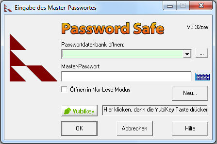
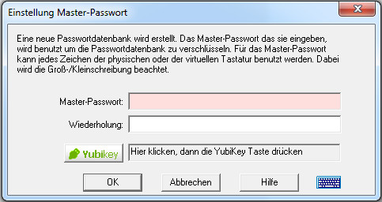

Password Safe ermöglicht dem Benutzer alle Passwörter in einem einzigen "Safe" (Passwortdatenbank) abzuspeichern, oder mehrere
Datenbanken für unterschiedliche Zwecke anzulegen (z.B. eine für die Arbeit, eine für den persönlichen Gebrauch).
Jede Datenbank ist unabhängig, kann verschoben werden und läuft auf den verschiedensten Systemen, solange dieselbe Version von Password Safe verwendet wird.
Die Datenbanken sind verschlüsselt mit einem Schlüssel, der vom Master-Passwort abgeleitet ist (das Master-Passwort
selber hingegen ist nicht in der Datenbank enthalten, in welche Form auch immer).
Wenn Sie Password Safe zum ersten Mal einsetzen, drücken Sie das Symbol "Neue Datenbank erstellen". Sie werden aufgefordert,
Name und Speicherort der Datenbank festzulegen (standardmäßig wird "pwsafe.psafe3" vorgeschlagen). Dann müssen Sie noch das Master-Passwort angeben,
womit der Inhalt der Datenbank verschlüsselt und "abgesperrt" wird.
Bevor Sie beginnen
Password Safe arbeitet hart daran um sicherzustellen dass die Passwortinformationen sachgemäß abgespeichert werden. Trotzdem kann Password
Safe nichts gegen physikalische Schaden oder Verlust der Festplatte tun, sowohl im PC als auch im Laptop.
Darum enpfehlen regelmäßig Kopien anzufertigen von der Passwortdatenbank 'off-line', d.h auf einem anderen PC oder Festplatte.
Dies können Sie entweder händisch machen, oder mit einem Cloud Speicherdienst wie DropBox,
SugarSync oder JungleDisk, um nur ein paar zu nennen.
Ebenfalls ein Überlegung wert wäre es Maßnahmen zu treffen für den Zugriff auf Ihre Datenbanken, sei es für Verwandte oder Mitarbeiter,
im Falle Sie nicht mehr weitermachen können.
Vom Konzept her hat Password Safe von Haus aus kein 'Hintertürchen' oder 'Passwortwiederherstellung'.
Das bedeutet dass Sie selbst dafür verantwortlich sind anderen Zugang zu Ihrem Master-Passwort zu geben und zu gewährleisten.
Dies kann einfach in einem geschlossenen Umschlag geschehen, vielleicht sogar im Tresor.
Es wäre auch möglich einzelne Teile des Master-Passwortes aufzuteilen auf mehrere Personen.
Neue Datenbank erstellen
Es gibt zwei Möglichkeiten eine neue Datenbank zu erstellen. Durch Klicken auf Neue Datenbank im Eingabe des Master-Passwortes Dialog beim Start der Anwendung,
oder mit Menü Datei->Neu, wenn Password Safe geöffnet ist. Beide Methoden rufen dann den Dialog Einstellung Master-Passwort auf.
Hinweis: Standardmäßig wird Password Safe die zuletzt benutzte Datenbank vorschlagen und zur Eingabe des Master-Passwortes auffordern.
Wenn Sie mehrere Datenbanken verwenden, können Sie eine Auswahl aus der Liste treffen. Sie können auch den Pfad der Datenbank händisch eingeben,
oder sogar eine Datei auswählen im Dialog "Datei" indem Sie die Taste ("...") drücken.
Wenn bereits eine Datenbank geöffnet ist, können Sie mit Datei->Öffnen oder mit dem Symbol Andere Datenbank öffnen auf eine andere Datenbank umschalten.


Wenn sie "Master-Passwort anzeigen" anklicken, wird das alte und das neue Master Passwort in Klarschrift angezeigt und die Wiederholung
ist ausgegraut weil sie nicht länger benötigt wird.
Einsatz von YubiKey mit PasswordSafe
Password Safe funktioniert auch mit dem YubiKey um Zwei-Faktor-Authentifizierung zu ermöglichen.
D.h. die Datenbank wird geschützt mit etwas was sie wissen (Master-Passwort) UND mit etwas was sie haben (YubiKey). Wenn sie kein YubiKey haben, werden
die YubiKey-spezifische Tasten und Texte in Password Safe nicht dargestellt, und die untenstehenden Anweisungen treffen nicht zu.
Wenn der YubiKey mit dem PC verbunden ist, wird eine "YubiKey"-Taste und -Text dargestellt in dem Fenster "Einstellung Master-Passwort".
Dies ermöglicht den Zugriff auf die Password Safe Datenbank entweder zusammen mit oder anstelle von dem Master-Passwort.
Für maximale Sicherheit empfehlen wir dass sie Ihre Datenbank mit beide Methoden absichern, sowohl mit YubiKey und als auch mit Master-Passwort.
Dies ist bekannt als Zwei-Faktor-Authentifizierung.
Setzen eines Master-Passwort mit YubiKey
Um das konfigurierte YubiKey als Schutz für die Datenbank einzusetzen:
Wenn sie es noch nicht gemacht haben, stecken sie den YubiKey in einem USB-Eingang an ihrem PC.
Die YubiKey-Taste im Fenster "Einstellung Master-Passwort" wird damit aktiv, und der Text rechts von der Taste
ändert sich zu "Drücke die taste, dann berühre das YubiKey"
Setze das Master-Passwort wie folgt:
Wenn sie die Datenbank schützen wollen mit beiden (YubiKey UND Master-Passwort, Zwei-Faktor-Authentifizierung)
dann füllen sie erstens das Master-Passwort und die Wiederholung dazu aus, und dann zweitens klicken sie auf die YubiKey-Taste.
Wenn sie die Datenbank nur mit dem Yubikey schützen wollen, dann lassen sie das Master-Passwort und die Wiederholung dazu leer,
und klicken sie auf die YubiKey-Taste.
Natürlich können sie die Datenbank auch nur mit dem Master-Passwort schützen. Geben sie dazu nur das Master-Passwort und die Wiederholung
ein und klicken of OK.
Klicken sie auf die YubiKey-Taste. Das "Drücke die Taste, dann berühre das YubiKey" wird ersetzt durch einen laufenden Balken
der die verbleibende Zeit angibt die zum Aktivieren des YubiKey noch verbleiben. Bitte betätigen sie den YubiKey wo die grüne Lampe blinkt.
Wenn sie in der Zeit (ca. 15 Sekunden) den YubiKey nicht drücken, wird eine Fehlermeldung angezeigt. Sie können es dann nocmal probieren, oder abbrechen.
Wenn der YubiKey aktiviert ist, wird eine Password Safe Datenbank erstellt.
Öffnen einer Datenbank mit YubiKey
Um eine Datenbank die mit dem YubiKey geschützt ist zu öffnen:
Stellen sie sicher das die gewünschte Datenbank in "Passwortdatenbank öffnen" ausgewählt ist.
Wenn nicht, klicken sie (...) und wählen sie die Richtige aus.
Wenn sie die Datenbank mit beiden (YubiKey und Master-Passwort) geschützt haben,
geben sie zuerst das Master-Passwort ein, und dann klicken sie die YubiKey-Taste.
Wenn sie die Datenbank nur mit YubiKey geschützt haben, dann lassen sie das Feld
für das Master-Passwort leer, und klicken sie die YubiKey-Taste.
Wenn sie die YubiKey-Taste drücken, wird das "Drücke die Taste, dann berühre das YubiKey" ersetzt durch einen laufenden Balken
der die verbleibende Zeit angibt die zum Aktivieren des YubiKey noch verbleiben (durch betätigen des YubiKey wo die grüne Lampe blinkt).
Wenn sie in der Zeit (ca. 15 Sekunden) den YubiKey nicht drücken, wird eine Fehlermeldung angezeigt. Sie können es dann nochmal probieren, oder abbrechen.
Wenn der YubiKey einmal aktiviert ist, wird die Password Safe Datenbank geöffnet.
Virtuelle Tastatur
Um ein Master-Passwort sicher zu gestalten, können auch Zeichen (z.B. von einer Deutschen Tastatur) wie ä, ö
oder ähnliche verwendet werden. Zur Eingabe der Zeichen dieses Master-Passwortes an einer fremden Tastatur, kann eine virtuelle Tastatur
benutzt werden. Diese Tastatur bildet die fremden Tastatur nach, mit allen da vorhandenen Zeichen. Die virtuelle Tastatur kann
durch Drücken des Symbols aufgerufen werden.
Fremdwörtliche Zeichen, die an der eigenen physischen Tastatur nicht eingegeben werden könnten, können somit eingegeben
werden, um so das gewünschte "richtige" Master-Passwort zu bilden. Auch Teile eines Master-Passwortes können mit der virtuellen
Tastatur gestaltet werden.
 aufgerufen werden.
Fremdwörtliche Zeichen, die an der eigenen physischen Tastatur nicht eingegeben werden könnten, können somit eingegeben
werden, um so das gewünschte "richtige" Master-Passwort zu bilden. Auch Teile eines Master-Passwortes können mit der virtuellen
Tastatur gestaltet werden.
aufgerufen werden.
Fremdwörtliche Zeichen, die an der eigenen physischen Tastatur nicht eingegeben werden könnten, können somit eingegeben
werden, um so das gewünschte "richtige" Master-Passwort zu bilden. Auch Teile eines Master-Passwortes können mit der virtuellen
Tastatur gestaltet werden.